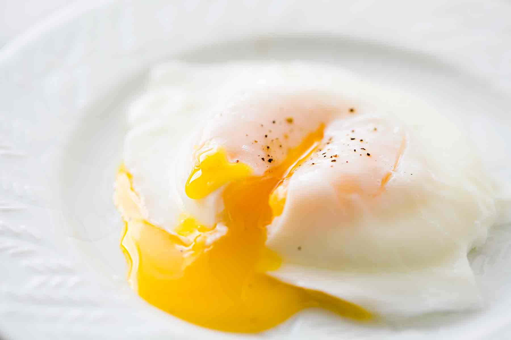

ไข่ดาวน้ำ
- ไข่ไก่ 2-3 ฟอง
- น้ำเปล่า 700 มิลลิลิตร
- น้ำส้มสายชู3-4 ช้อนโต๊ะ
- น้ำเย็นจัด
ส่วนผสม
- ตั้งน้ำให้ร้อนจนเกือบเดือด ใส่น้ำส้มสายชูลงไป *การที่ใส่น้ำส้มสายชู น้ำส้มสายชูจะทำหน้าที่รัดไข่ให้เป็นทรงสวย (เป็นลูก ๆ ) ถ้าใช้น้ำธรรมดาไข่จะไม่ค่อยเป็นทรง มันจะแยกตัวออก
- วนน้ำให้เป็นวงกลม
- ตอกไข่ใส่ถ้วย แล้วใส่ลงไปตรงกลางน้ำ ต้มไข่ประมาน 2-3 นาที หรือจนกว่าจะได้ความสุกในระดับที่ต้องการ
- ตักไข่ขึ้นมาใส่ในน้ำเย็น พักไว้ (เพื่อหยุดความสุก และล้างน้ำส้มสายชูออก)
- ซับน้ำออกให้แห้ง พร้อมรับประทาน
วิธีทำ
เวลาเตรียมส่วนผสม: 5 นาที เวลาปรุงอาหาร: 10 นาทีขอบคุณข้อมูลสูตรอาหารนี้จาก